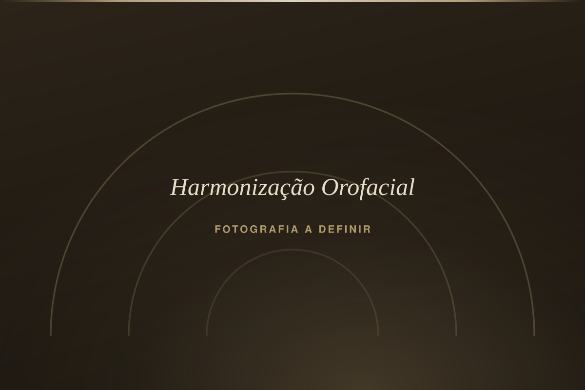

Últimas vagas
Pós-graduação
Harmonização Orofacial
O programa mais procurado do Instituto. Protocolos faciais aplicados sob supervisão desde os primeiros módulos, com a anatomia tratada como fundamento da decisão clínica — não como capítulo de abertura.
Objetivos
- Dominar a anatomia facial aplicada aos protocolos de harmonização
- Construir planejamento facial individualizado e defensável
- Executar procedimentos com segurança e manejo de intercorrências
Público-alvo
- Cirurgiões-dentistas com registro ativo no conselho
- Profissionais que já atendem e querem ampliar a oferta clínica
- Recém-formados buscando a primeira especialização
Diferenciais
- Prática supervisionada em clínica própria
- Turma reduzida: correção no detalhe, por aluno
- Discussão de casos reais trazidos pelos próprios alunos
O que você aprenderá
- Avaliação e documentação facial
- Protocolos de preenchimento e toxina
- Integração com o planejamento odontológico
Grade resumida
- Anatomia facial aplicada
- Diagnóstico e planejamento
- Protocolos e técnicas
- Prática clínica supervisionada
- Manejo de intercorrências
- Gestão e ética na oferta do serviço
A grade completa, com módulos e ordem das disciplinas, é enviada pelo consultor.